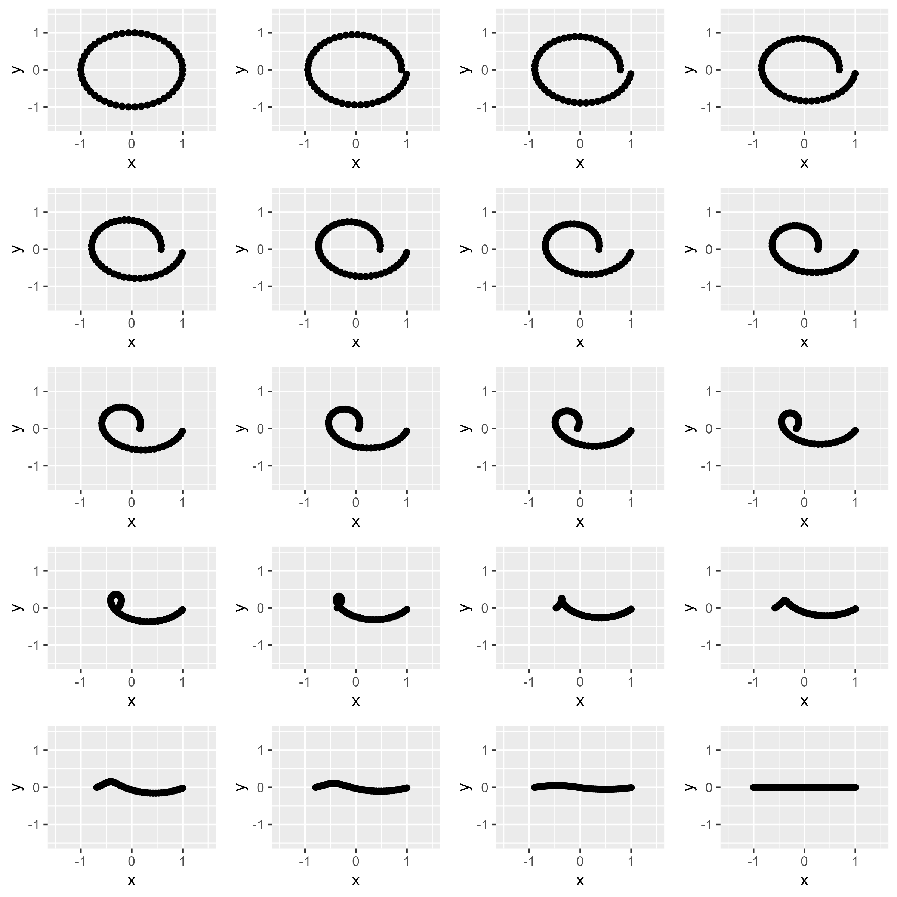
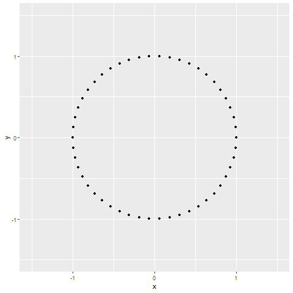

# load dependencies
#install.packages("pacman")
pacman::p_load("ggplot2","gridExtra","ggplot2","gganimate","transformr","gifski")
# Function to generate circle points
generate_circle <- function(n) {
theta <- seq(0, 2 * pi, length.out = n + 1)[1:n]
x <- cos(theta)
y <- sin(theta)
data.frame(x, y)
}
# Function to generate horizontal line points
generate_line <- function(n) {
x <- seq(-1, 1, length.out = n)
y <- rep(0, n)
data.frame(x, y)
}
# Function to morph between two shapes
morph_shapes <- function(shape1, shape2, steps) {
morphed_shapes <- vector("list", steps)
for (i in 1:steps) {
alpha <- (i - 1) / (steps - 1)
morphed_shapes[[i]] <- shape1 * (1 - alpha) + shape2 * alpha
}
morphed_shapes
}
# Number of points and steps
n <- 50
steps <- 20
# Generate initial and final shapes
circle <- generate_circle(n)
line <- generate_line(n)
# Morph between the shapes
morphed_shapes <- morph_shapes(circle, line, steps)
# Plot all shapes
plots <- lapply(morphed_shapes, function(shape) {
ggplot(shape, aes(x, y)) + geom_point() + xlim(-1.5, 1.5) + ylim(-1.5, 1.5)
})
do.call(grid.arrange, plots)
# # save out arranged plot
# ggsave(filename = here::here("3. Analysis","images","001_cirlce_to_line.png"), do.call(grid.arrange, plots), dpi = 300, height = 8, width = 8)Simulated annealing is a stochastic optimization algorithm that draws inspiration from the annealing process in metallurgy, where metals are heated and slowly cooled to achieve a low-energy crystalline state. The goal is to find an optimal solution to a problem by exploring a solution space and “cooling down” over time. Here’s a mathematical representation of the key components and the intuition behind simulated annealing:
Objective Function: In optimization problems, we have an objective function \(f(x)\) that assigns a value to each candidate solution \(x\). The objective is to either maximize or minimize this function.
Solution Space: The set of all possible solutions to the problem is called the solution space, denoted as \(X\). Each point \(x\) in this space corresponds to a specific solution.
Energy Landscape: The objective function defines an “energy landscape” over the solution space. Higher values of the objective function correspond to higher energy states, and lower values correspond to lower energy states. In some cases, the landscape may have multiple local optima, making it challenging to find the global optimum.
Temperature: Simulated annealing introduces the concept of temperature (\(T\)), which is initially set to a high value. The temperature controls the exploration versus exploitation trade-off. Higher temperatures allow for more exploration (acceptance of worse solutions), while lower temperatures focus on exploitation (acceptance of better solutions).
Neighbor Generation: To explore the solution space, we generate neighboring solutions from the current solution. This is done using a “neighbor generation” function, \(x' = \text{generate\_neighbor}(x)\), which perturbs the current solution.
Acceptance Probability: Simulated annealing accepts or rejects neighboring solutions based on a probability distribution. The probability of accepting a worse solution (\(x'\)) is determined by:
\[ P(\text{accept}) = \begin{cases} 1, & \text{if } f(x') < f(x) \quad \text{(worse solution)} \\ e^{-\frac{f(x') - f(x)}{T}}, & \text{if } f(x') \geq f(x) \quad \text{(better solution)} \end{cases} \]
Here, \(e\) is the base of the natural logarithm, and \(T\) is the current temperature. When \(T\) is high, the algorithm is more likely to accept worse solutions, enabling exploration. As \(T\) decreases, it becomes less likely to accept worse solutions, focusing on exploitation.
- Cooling Schedule: The temperature is reduced gradually over time according to a “cooling schedule.” A common choice is to decrease the temperature exponentially:
\[ T_{\text{new}} = \alpha \cdot T_{\text{old}} \]
Here, \(\alpha\) is the cooling rate (typically between 0 and 1).
Termination: The algorithm iterates through these steps for a specified number of iterations or until a termination condition is met (e.g., a low temperature).
Exploration History: Throughout the process, the algorithm maintains a record of the solutions explored. This exploration history can be visualized to understand how the algorithm traversed the solution space.
By combining these components, simulated annealing gradually explores the solution space, initially accepting worse solutions with a higher probability and later focusing on exploiting better solutions as the temperature decreases. This stochastic exploration allows it to escape local optima and converge to a near-optimal solution.
You can use this simulated annealing to morphs between shapes, by defining The sequence of shapes symbolizes the solution space. Unlike traditional acceptance probabilities, this code uniformly generates and visualizes intermediate shapes for a comprehensive exploration. Although there’s no cooling schedule, the gradual and continuous transitions mimic the annealing process. The more steps you allow, the “smoother” the transition (althorugh the time to run the code gets much longer).
Here is some code that transitions from a circle to a line:
Figure 1. Iterations of simulated annealing transition from Circle to Line

You can even go a step further and animate the process.
# Create a data.frame to hold all morphed shapes with an additional 'frame' column
all_frames <- data.frame(x = numeric(), y = numeric(), frame = integer())
for (i in 1:length(morphed_shapes)) {
frame_data <- cbind(morphed_shapes[[i]], frame = i)
all_frames <- rbind(all_frames, frame_data)
}
# Create gganimate plot
p <- ggplot(all_frames, aes(x, y)) +
geom_point() +
xlim(-1.5, 1.5) + ylim(-1.5, 1.5) +
transition_time(frame) +
ease_aes('linear')
# Create the animation object
g <- gganimate::animate(p)
# Save the animation
# I found that the gifski_renderer renderer seems to work well for saving out gifs
# anim_save(here::here("circle_to_line_animation.gif"), animation = g, renderer = gifski_renderer)Figure 2. Simulated Annealing transition animation from Circle to Line

Resources
- I originally got the idea to work on this project from an updated version of Anscombe’s Quartet called the “Datasaurus Dozen”. It is a set of 12 distinct datasets, each sharing identical summary statistics but demonstrating vastly different shapes and patterns. It highlights the importance of data visualization in uncovering hidden insights that summary statistics alone may overlook. The animations in the Datasaurus Dozen are based off work using simulated annealing to generate the transitions (here is link to the paper).